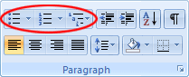
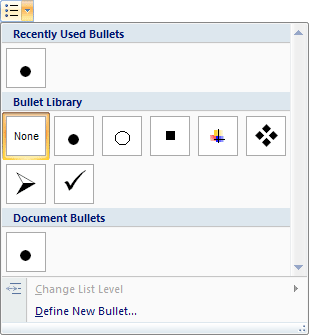
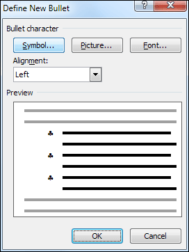
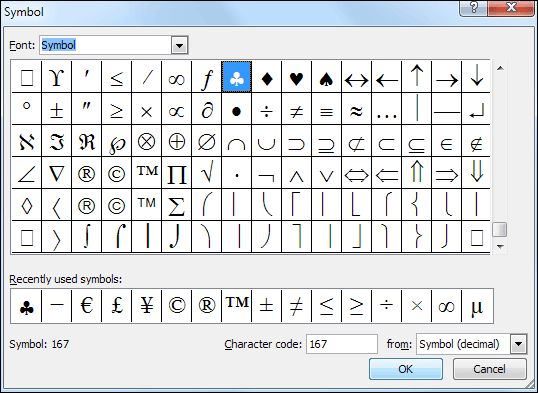
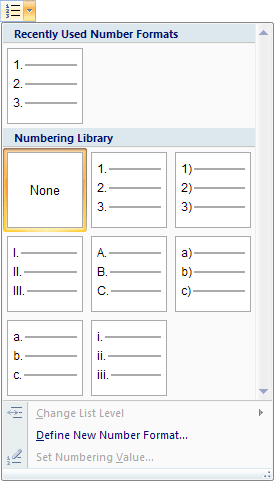
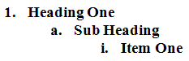
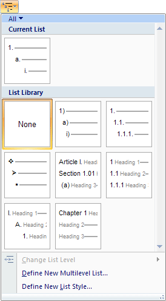
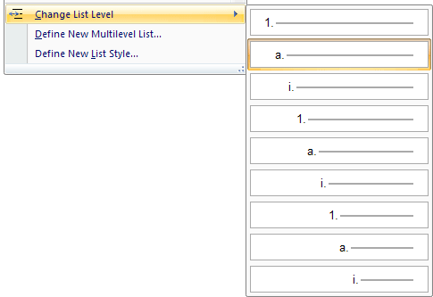
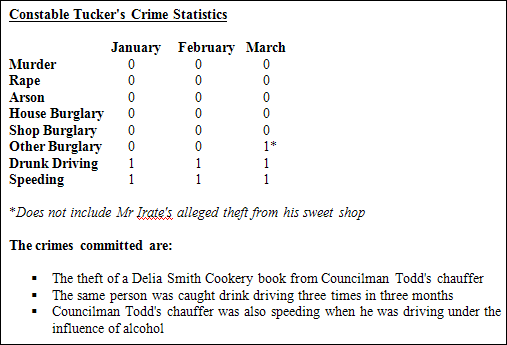

Free
computer Tutorials
|
Free
computer Tutorials
|
|
 home home |
|
|||||
Microsoft Word 2007 to 2010
Creating Bulleted ListsBulleted lists have been used throughout this book. To create one of your own, do the following.
 The first of the three is for bullets that are not numbers or letter. The default for the first option is to have round bullets. If this is all you want then simply click the first option, after you have highlighted your text. You can, however, have other symbols for your bulleted list. Click the arrow next to the first bullet option to see the following:  You can select any of the bullets in the Bullet Library. Move your mouse over each one and you'll see a preview on your page. Click with the left mouse button to choose a particular bullet. You have a wider range of choices if you click the link at the bottom
that says "Define New Bullet". When you click the link, you'll
see the following dialogue box appear:  Click the Symbol button at the top to see this screen:  Select the symbol you want and then click OK. You'll then be returned to the Define New Bullet dialogue box. If you like the Preview, click OK on this dialogue box, as well. You can however, select a picture, or a font as your bullet. Click the buttons at the top to see how these work.
The second bullet option on the Paragraph panel is for numbers and letters. The default is for consecutive numbers starting from 1. Again, click the arrow to see more options:  So if you wanted lowercase letters instead of numbers, select this option from the list. You can also set your own style by clicking the "Define New Number Format" link at the bottom. This opens a dialogue box similar to the one you've just seen. The third bullet option on the Paragraph panel is for lists that are more complex - bullets within bullets. A list like this, for example:  To get the list above, we first typed the text "Heading One".
After highlighting this text, we clicked the third bullet option on
the Paragraph panel to see this:  Clicking the first option got us the number 1 as a bullet. We then typed the next two items. However, this gets you a numbered list, 1 to 3. To change the list into the one above, highlight an item on your list. Then click the link at the bottom that says "Change List Level". You'll then see the following:  Select the List Level you want. Do the same for any other items on your list.
 We went for a square bullet, but feel free to use something else. Notice, also, that we've made the made bold the text "The crimes committed are:". We've also added a line break after this.
OK, our report is coming along nicely. We can do more to it, though.
The next thing we're going to do is use the font option to change the
size and font of the heading. Setting Fonts in Word 2007/2010 --> <--Back to the Word Contents Page View all our Home Study Computer Courses
|
||||||
|